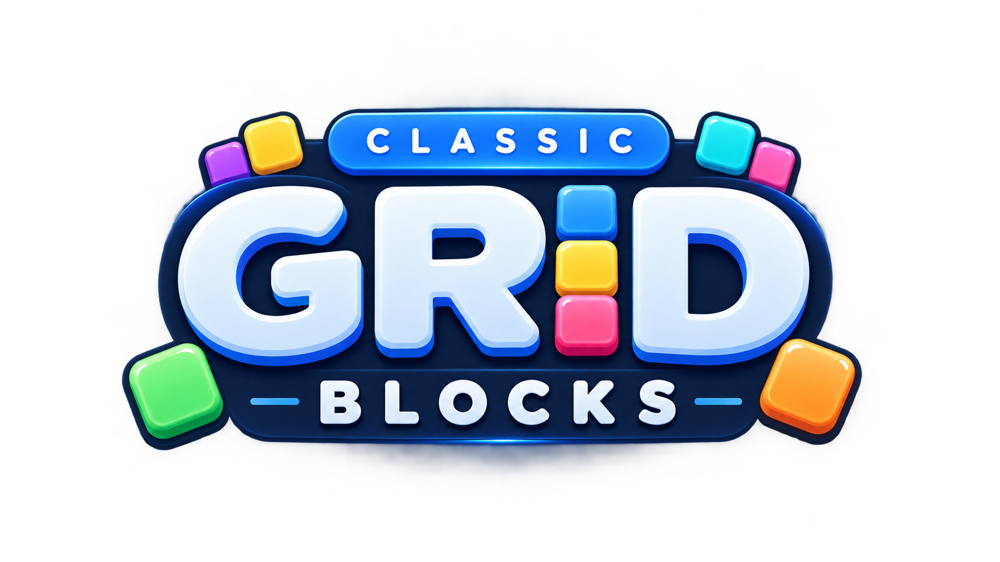
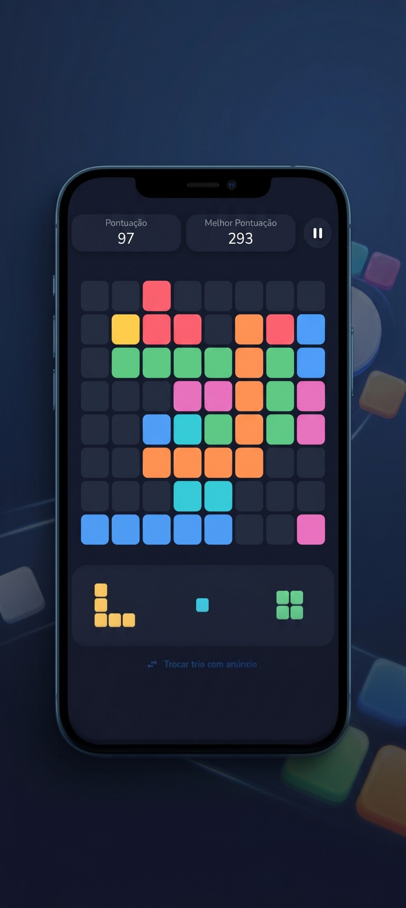
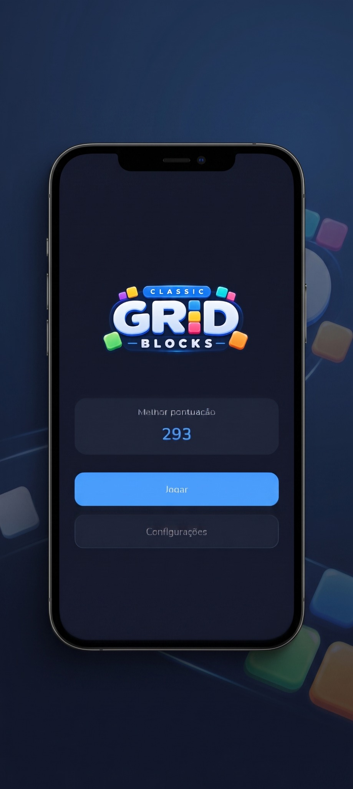
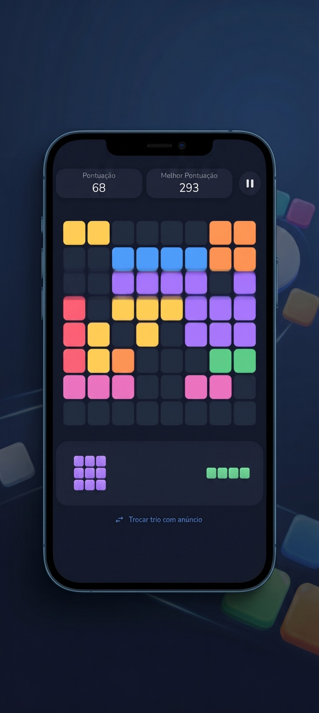
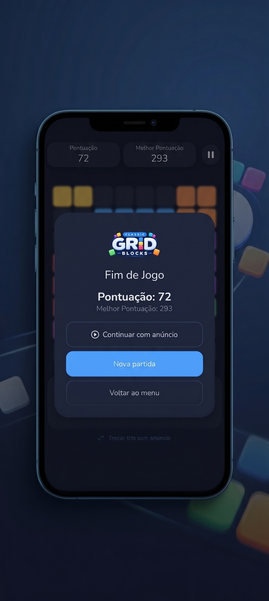
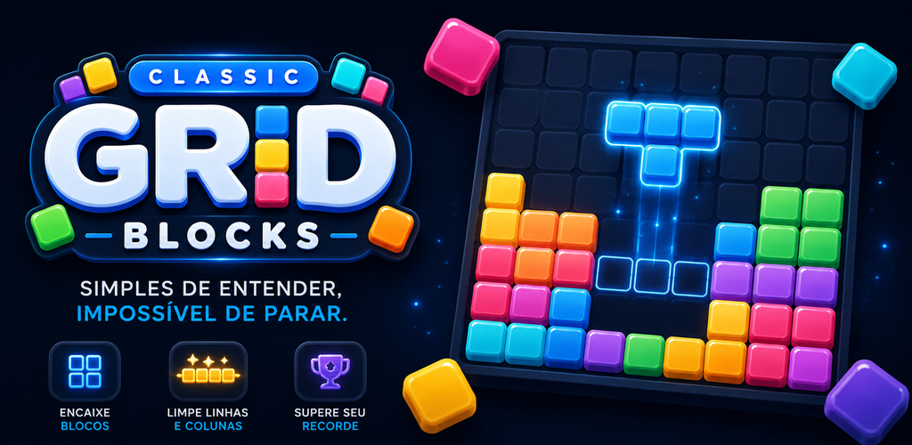

Escolha a peça
Analise o trio disponível e decida qual encaixe preserva mais possibilidades para as próximas jogadas.

Classic Grid Blocks é um block puzzle 10×10 gratuito, feito para partidas rápidas, decisões simples e aquela vontade de jogar mais uma vez.

Como jogar
A cada ciclo, você recebe três peças. Arraste para o tabuleiro, complete linhas ou colunas e mantenha espaço para continuar jogando. Quanto melhor a sequência, maior a pontuação.
Analise o trio disponível e decida qual encaixe preserva mais possibilidades para as próximas jogadas.
Preencha uma linha ou coluna inteira para limpá-la e liberar espaço no tabuleiro.
Limpezas em sequência rendem mais pontos e transformam cada partida em uma busca pelo seu melhor resultado.
Galeria
Interface limpa, blocos coloridos e foco total no tabuleiro. Sem cadastro obrigatório: abrir, jogar e tentar superar o próprio recorde.




Recursos
Classic Grid Blocks mantém o núcleo simples e adiciona recursos opcionais para dar mais controle quando a partida aperta.
Após o game over, você pode assistir a um anúncio recompensado e continuar a partida uma vez.
Quando disponível, o Swap permite trocar o trio de peças assistindo a um anúncio recompensado.
Acompanhe sua pontuação atual e tente superar a melhor marca a cada nova partida.
Não é necessário criar login. O gameplay funciona offline; recursos de anúncio dependem de conexão.
FAQ
Tudo o que você precisa saber antes de instalar.
Sim. O jogo é gratuito para Android e é monetizado por anúncios.
Não. O jogo não exige login nem criação de conta.
Sim. O gameplay funciona offline. Recursos que dependem de anúncios exigem conexão com a internet.
Há anúncios recompensados opcionais ligados a recursos como Continue e Swap, além de interstitials entre partidas. Anúncios não interrompem uma jogada em andamento.
Atualmente, o jogo está disponível apenas para Android pela Google Play.
Português do Brasil, inglês e espanhol.
Outros jogos
Explore outros projetos independentes do estúdio.
Puzzle de lógica binária baseado em dedução, estatísticas e desafios diários.
Conhecer Dual Grid →Veja os títulos disponíveis e os próximos projetos da Demavinsky Games.
Ver catálogo →Baixe Classic Grid Blocks gratuitamente para Android e comece uma nova partida.
Baixar no Google Play